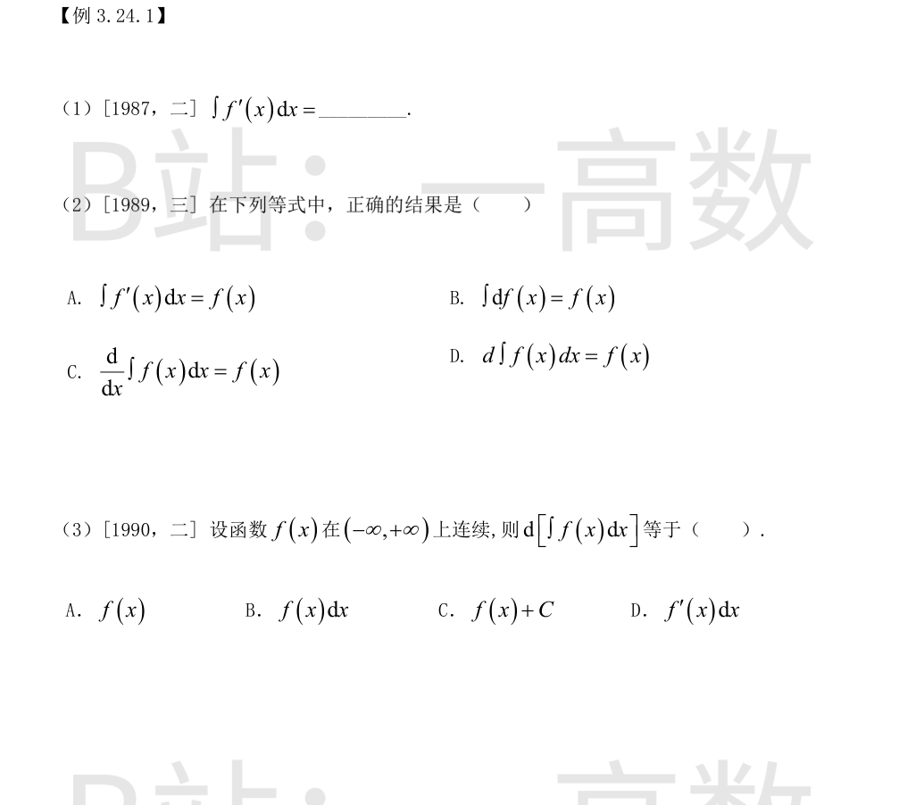
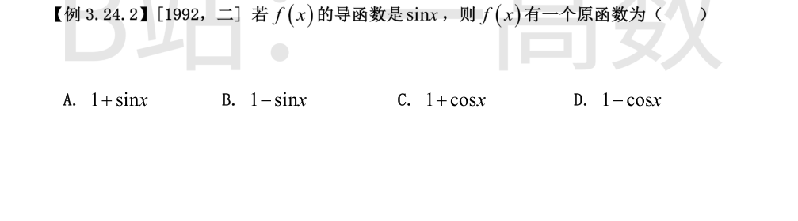

由不定积分定义（原函数的全体），$f'(x)$ 的不定积分为其任意一个原函数加任意常数，而 $f(x)$ 是 $f'(x)$ 的一个原函数，故
$$\int f'(x)\,dx=f(x)+C .$$
不定积分是带任意常数 $C$ 的原函数族：
- A：$\displaystyle\int f'(x)\,dx=f(x)+C$，缺 $C$，错；
- B：$\displaystyle\int df(x)=f(x)+C$，缺 $C$，错；
- C：先积分后求导，常数 $C$ 求导消失，$\dfrac{d}{dx}\displaystyle\int f(x)\,dx=f(x)$，正确；
- D：先积分后微分，$d\displaystyle\int f(x)\,dx=f(x)\,dx$，选项缺 $dx$，错。
故选 C。
设 $F$ 为 $f$ 的一个原函数，则 $\displaystyle\int f(x)dx=F(x)+C$。对其求微分（$dC=0$）：
$$d\Bigl[\int f(x)\,dx\Bigr]=d\bigl[F(x)+C\bigr]=F'(x)\,dx=f(x)\,dx .$$
故选 B。

由 $f'(x)=\sin x$ 得
$$f(x)=\int\sin x\,dx=-\cos x+C_1 .$$
$f$ 的原函数为
$$\int f(x)\,dx=\int(-\cos x+C_1)\,dx=-\sin x+C_1x+C_2 .$$
不含 $x$ 项须 $C_1=0$，故 $f$ 的原函数形如 $C_2-\sin x$；取 $C_2=1$ 得 $1-\sin x$。
验证：$(1-\sin x)'=-\cos x=f(x)$，$f'(x)=\sin x$，符合。故选 B。（其余选项：$(1+\sin x)'=1\cdot\cos x$ 的二阶导为 $-\sin x\ne\sin x$ 的对应链均不满足。）